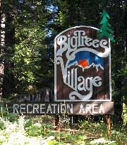
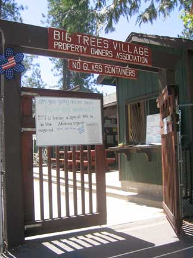
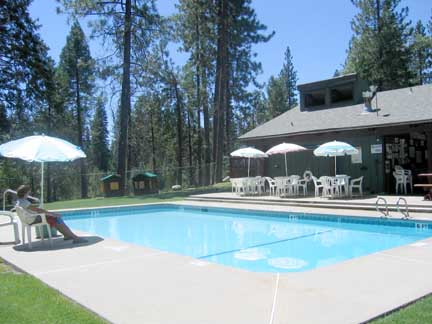

There is plenty of shaded parking among the big trees. Follow the pathway that starts at the parking lot up to the clubhouse.

A Tour of the
Big Trees Village
Property Owners Association
Recreation Center
The Recreation Center is open from Memorial Day to Labor Day. It's open just on weekends until the third week of June and 7 days a week until Labor day. It is located near the intersection of Boards Crossing and Sierra Parkway. The parking lot is the second driveway from the intersection.

On the way there, you will pass the children's play area with swings slides and monkey bars.

When you walk up the incline to the gate, you will see a number of announcements of current activities and events. Just past the gate on the right is the sign in sheet. Enter your name and 6-126, which is the unit and lot number.
